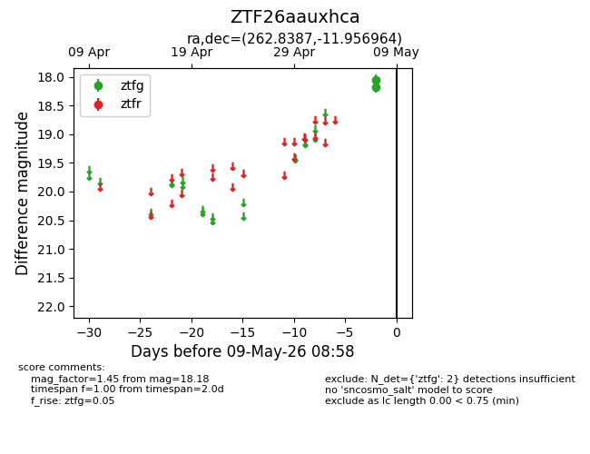
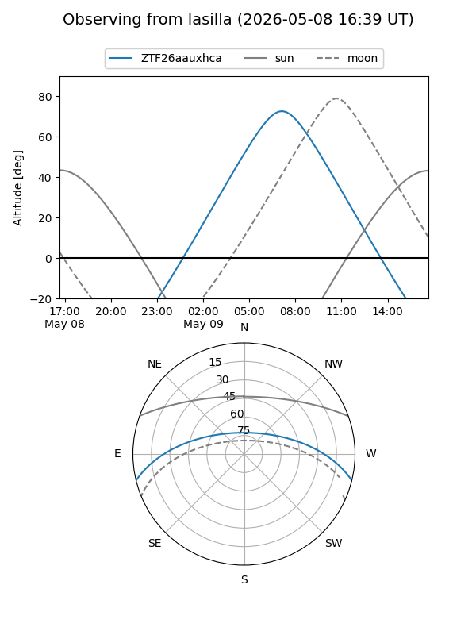
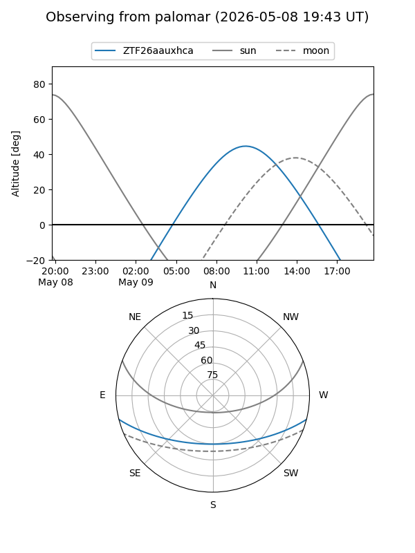

ZTF26aauxhca
Target ZTF26aauxhca at 2026-05-09 08:59
Aliases and brokers:
FINK: link
Lasair: link
ALeRCE: link
alt names
ZTF26aauxhca (ztf,fink_ztf)
Coordinates:
equatorial (ra, dec) = 262.8387,-11.95696
equatorial (HMS+DMS) = 17:31:21.28,-11:57:25.07
galactic (l, b) = (12.7915,+11.74857)
Flags:
Photometry:
last ztfg=18.18
2 ztfg detections
Lightcurve

Visibility


Additional plots